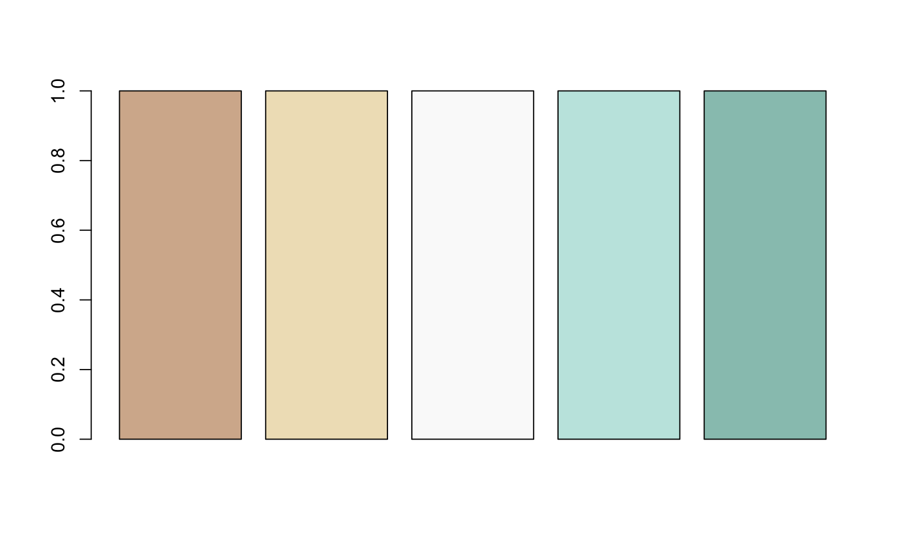

All colorblind friendly RColorBrewer palettes
recreated without the number of colors limitation
and with transparency support thanks to pal_alpha that can be used alone.
Also, all viridis palettes (see the package on CRAN),
yet color ramps are borrowed and Momocs does not depend on it.
Also, pal_qual_solarized based on Solarized: http://ethanschoonover.com/solarized
and pal_seq_grey only shades of grey from grey10 to grey90.
pal_alpha(cols, transp = 0) pal_manual(cols, transp = 0) pal_qual_solarized(n, transp = 0) pal_seq_grey(n, transp = 0) pal_div_BrBG(n, transp = 0) pal_div_PiYG(n, transp = 0) pal_div_PRGn(n, transp = 0) pal_div_PuOr(n, transp = 0) pal_div_RdBu(n, transp = 0) pal_div_RdYlBu(n, transp = 0) pal_qual_Dark2(n, transp = 0) pal_qual_Paired(n, transp = 0) pal_qual_Set2(n, transp = 0) pal_seq_Blues(n, transp = 0) pal_seq_BuGn(n, transp = 0) pal_seq_BuPu(n, transp = 0) pal_seq_GnBu(n, transp = 0) pal_seq_Greens(n, transp = 0) pal_seq_Greys(n, transp = 0) pal_seq_Oranges(n, transp = 0) pal_seq_OrRd(n, transp = 0) pal_seq_PuBu(n, transp = 0) pal_seq_PuBuGn(n, transp = 0) pal_seq_PuRd(n, transp = 0) pal_seq_Purples(n, transp = 0) pal_seq_RdPu(n, transp = 0) pal_seq_Reds(n, transp = 0) pal_seq_YlGn(n, transp = 0) pal_seq_YlGnBu(n, transp = 0) pal_seq_YlOrBr(n, transp = 0) pal_seq_YlOrRd(n, transp = 0) pal_seq_magma(n, transp = 0) pal_seq_inferno(n, transp = 0) pal_seq_plasma(n, transp = 0) pal_seq_viridis(n, transp = 0) pal_qual(n, transp = 0) pal_seq(n, transp = 0) pal_div(n, transp = 0)
| cols | color(s) as hexadecimal values |
|---|---|
| transp |
|
| n |
|
Default color palettes are currently:
pal_qual=pal_qual_Set2
pal_seq=pal_seq_viridis
pal_div=pal_div_RdBu
RColorBrewer palettes are not happy when n is lower than 3 and above
a given number for each palette. If this is the case, these functions will
create a color palette with colorRampPalette and return colors even so.
pal_div_BrBG(5) %>% barplot(rep(1, 5), col=.)pal_div_BrBG(5, 0.5) %>% barplot(rep(1, 5), col=.)